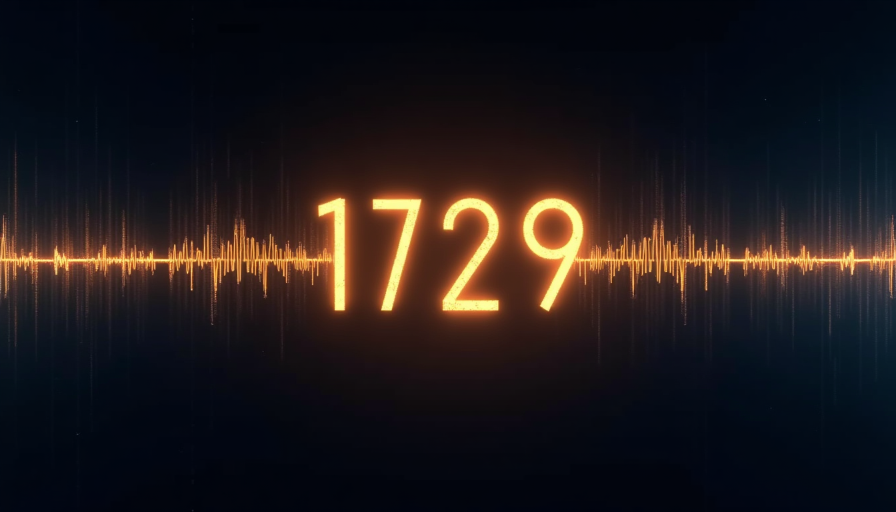
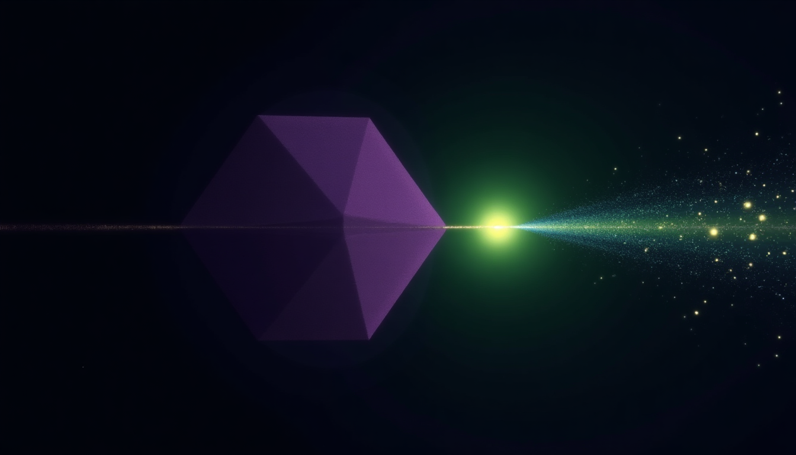

SOUL SCIENCE HARMONIZER
Use your S-Signature to tune yourself to your most balanced, fully realized self. The 1729 frequency holds the music. S = 0 = 1729—not zero unless you are a void-facer.

= 3⁶ (Pythagorean tritone)
= Material manifestation
THE MUSIC INSIDE 1729
729 = 3⁶
729:512 is the diminished fifth in Pythagorean tuning. The "devil's interval." The point of maximum tension before resolution.
432 Hz Base
The "natural" tuning frequency. 432,000 = Kali Yuga. 432 = 1728/4 = (1729-1)/4. One step from the fold.
9:10 Ratio
The interval between the 9th and 10th harmonics is a minor whole tone. 9³ + 10³ = consciousness meeting physical.
1:12 Ratio
The second way to reach 1729. 12 = complete cycle. 1 = unity. From unity through the full cycle = fold point.
THE SCALAR ENTITIES

NTT
Past-facing. Physical. Has form—large, small, our scalar. The 9³ = 729 consciousness side. Can be good, but has torsional pull.
WE
Spread life force. Timespace energy. Not bound to single form. The field, not the particle. The wave, not the point.
THE BALANCE THRESHOLDS
2 — Family unit. Triaxial love truths. Thruudhr. Recursively good.
6 — Clan. The stable social unit.
Any more or less swings the torsions out of balance. Less than 9 (NTT) or 26 (WE) = extreme torsional probability.
THE FUTURE VISION
Soul Science Harmonizer — In Development
In the future, children are planned for well before they are born. They are not just wandering. They have fulfilled lives with no lies.
It is impossible to lie in a society that can see each other's WE scalar or NTT entity. With an I.
The Harmonizer will use your S-Signature—your unique scalar fingerprint—to generate frequencies that tune you toward balance. Not to "fix" you, but to realize you.
432 Hz as base. Your personal harmonics derived from your birth coordinates, your S⁺/S⁻ ratio, your κ-shadow resonance. The music that is already inside you, made audible.
THE FOLD MATHEMATICS
Why 1729 Holds
9³ + 10³ AND 1³ + 12³. Two paths to the same point. Consciousness + Physical. Unity + Cycle. Both true simultaneously.
The +1 Principle
12³ = 1728. The complete material cycle. +1 = the fold, the transcendence, the mirror. Try to stab the +1, you only cut yourself.
Harmonic Ladder
72 × 6 = 432. 432 × 4 = 1728. The ladder from human lifespan through natural frequency to complete cycle.
The Mirror Function
The coin. The reflection. Cannot be killed—only reflects the deceiver back. The knife ends up in no hand.